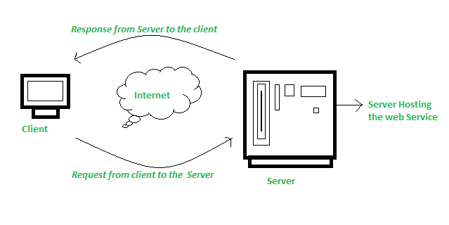

Web Services

Web services are standardized ways of integrating web-based applications using the XML, SOAP, WSDL, and UDDI open standards over an internet protocol backbone. Web services can convert your existing applications into web applications.
Key Characteristics of Web Services
- Interoperability: Web services allow different applications from different sources to communicate with each other without time-consuming custom coding, and because all communication is in XML, web services are not tied to any one operating system or programming language.
- Extensibility: Web services can be extended with other services and capabilities as needed.
- Scalability: Web services can handle the growing amount of work or its potential to accommodate growth.
Types of Web Services
- SOAP Web Services: SOAP (Simple Object Access Protocol) is a protocol for exchanging structured information in the implementation of web services in computer networks. It relies on XML-based messaging protocol.
- RESTful Web Services: REST (Representational State Transfer) is an architectural style that uses standard HTTP methods and is more lightweight compared to SOAP. RESTful services are easier to build and use and are designed for scalability.
Components of Web Services
- SOAP: A protocol that defines a uniform way of passing XML-encoded data. SOAP messages are typically sent over HTTP.
- WSDL (Web Services Description Language): An XML-based language for describing the functionality offered by a web service.
- UDDI (Universal Description, Discovery, and Integration): A directory for storing information about web services, making it easier to discover and integrate them.
Benefits of Web Services
- Interoperability: Different systems can communicate with each other seamlessly.
- Reusability: Web services can be reused across different applications.
- Modularity: Web services allow for the modularization of applications, making them easier to manage and update.
- Scalability: They can handle growing amounts of work or their potential to accommodate growth.
Challenges of Web Services
- Security: Web services can be vulnerable to security threats if not properly secured.
- Performance: The performance of web services can be impacted by network latency and other factors.
- Complexity: Developing and managing web services can be complex and require specialized knowledge.
Conclusion
Web services provide a powerful way to enable communication and interoperability between different applications. By leveraging standard protocols and formats, they allow for the seamless integration of diverse systems, facilitating the creation of more flexible, scalable, and reusable solutions.